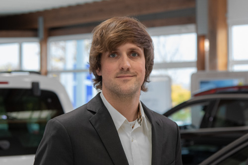
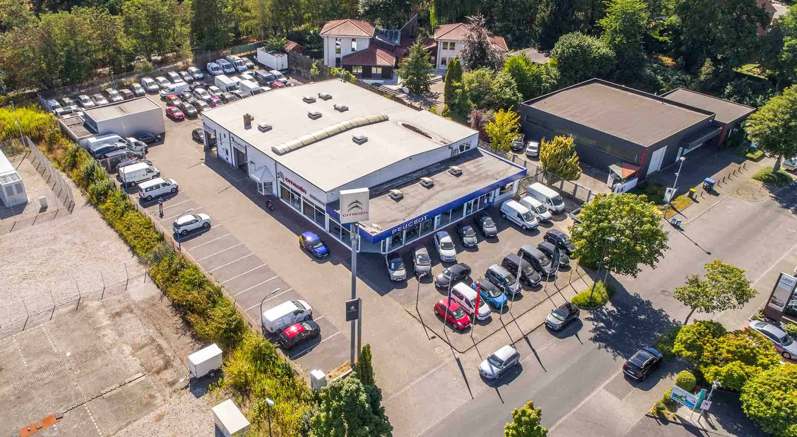
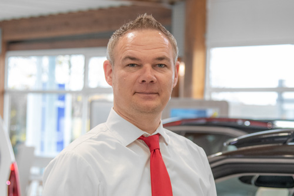
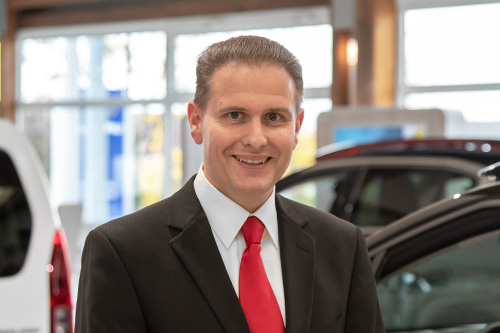
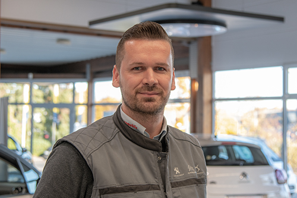
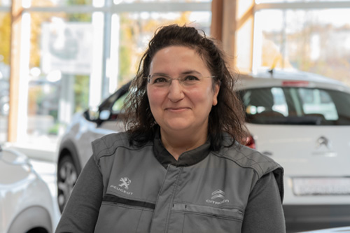
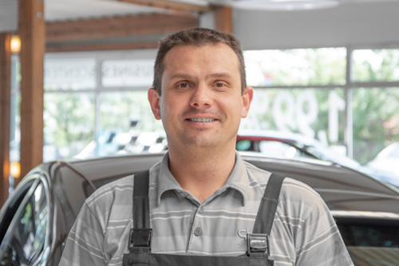
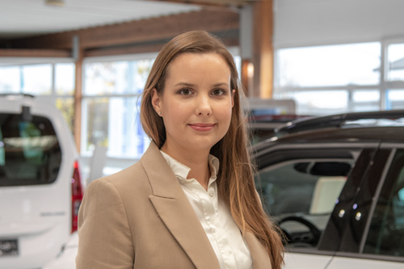
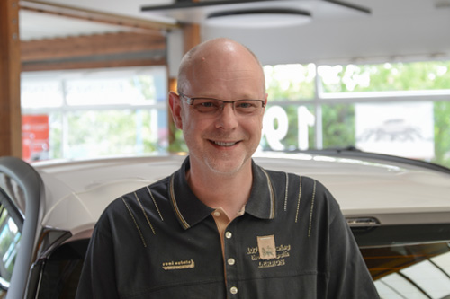
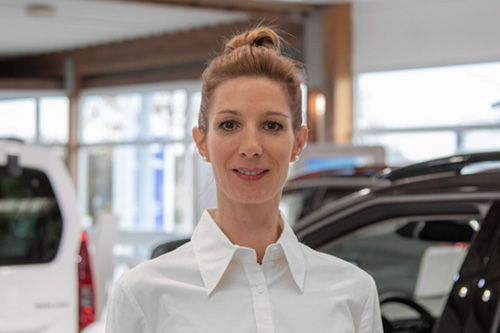

Persönlich in Recklinghausen
Automobile Leidenschaft seit 1992.
Seit mehr als drei Jahrzehnten verbinden wir persönliche Beratung mit Erfahrung rund ums Auto. Lernen Sie die Menschen kennen, die sich täglich um Verkauf, Service und alles dazwischen kümmern.

Das Team von Automobile Rosenkranz
Menschen, die weiterhelfen.
Im Verkauf, im Service und in der Verwaltung sind wir persönlich für Sie da.


Junior Verkaufsberater
Julian Adler
Neu- und Gebrauchtwagen, VANDERER
Kontakt über die Zentrale


Serviceassistent
Thomas Vollmer
Serviceassistent
Kontakt über die Zentrale

Peugeot-Service-Techniker
Christoph Lissy
Peugeot-Service Techniker
Kontakt über die Zentrale
Citroën-Service Techniker
Sebastian Sommer
Citroën-Service Techniker
Kontakt über die Zentrale
KFZ-Mechatroniker
Marcel Tack
Subaru-Service Techniker
Kontakt über die Zentrale
KFZ-Mechatroniker
Marcus Traud
KFZ-Mechatroniker
Kontakt über die Zentrale
KFZ-Mechatroniker
Nils Wasmus
KFZ-Mechatroniker
Kontakt über die Zentrale

Leitung Buchhaltung und Verwaltung
Sophie Rosenkranz M.Sc.
Master der Wirtschaftswissenschaften
Kontakt über die Zentrale

Disposition
Andreas Pelz
Disposition
Kontakt über die Zentrale

Disposition
Britta Busch
Betriebswirtin und Disponentin
Kontakt über die Zentrale
Unsere Geschichte
Ein Autohaus mit langer Verbindung zur Region.
1993 wurde die RR-Automobile GmbH in Recklinghausen als offizieller Peugeot-Partner eröffnet. Gründer Rolf Rosenkranz verband seine Erfahrung als Fahrlehrer, Kfz-Sachverständiger, Rennfahrer und Automobilkaufmann mit einem klaren Anspruch: Qualität, Vertrauen und Service sollen jedes Fahrzeug begleiten.
Heute blickt Automobile Rosenkranz auf mehr als drei Jahrzehnte im Automobilgeschäft zurück. Persönliche Beratung, Kompetenz und Begeisterung für alles, was Räder hat, prägen den Betrieb weiterhin.